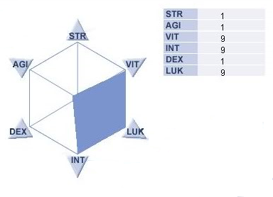

Name der Klasse


Fürth – Alle Eltern kennen das: Kinder, die müde sind, können unterwegs ziemlich anstrengend sein, im Restaurant, im Flugzeug, beim Einkaufen. Ein neuer Fall aus einem Supermarkt in Fürth (Bayern) heizt die Diskussion um Toleranz neu an. SCHREIHALS-STREIT IN SUPERMARKT! Tina Seiler (27) war vormittags mit Töchterchen Lina (2) in einem Edeka-Center in Fürth einkaufen.